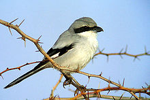
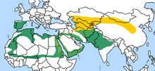
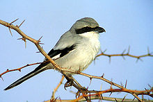
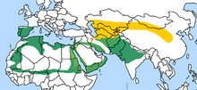

| Southern Grey Shrike | |
|---|---|
|  | |
| Southern Grey Shrike, Oman | |
| Conservation status | |
| Binomial name | |
| Lanius meridionalis Temminck, 1820 |
|
|  |
| Southern Grey Shrike | |
|---|---|
|  | |
| Southern Grey Shrike, Oman | |
| Conservation status | |
| Binomial name | |
| Lanius meridionalis Temminck, 1820 |
|
|  |
The Southern Grey Shrike, Lanius meridionalis, is a member of the shrike family.
It is closely related to the Great Grey Shrike, Lanius excubitor, with which it used to be considered conspecific; where they co-occur, they do not interbreed and are separated by choice of habitat.[1]
The race L. m. meridionalis is resident in southern Europe and north Africa. It is slightly smaller and darker than the Great Grey Shrike, and prefers dry open country.
The race L. m. pallidirostis breeds in central Asia and winters in the tropics. It is much paler than Southern Grey or Great Grey, and is sometimes split as a separate species, the Steppe Grey Shrike, L. pallidirostis. It too prefers more arid habitat with sparse vegetation.
This medium-sized passerine bird eats large insects, small birds and rodents. Like other shrikes it hunts from prominent perches, and impales corpses on thorns or barbed wire as a "larder".
The plumage is generally similar to Great Grey Shrike apart from the differences noted above.
The migratory eastern form is a scarce vagrant to western Europe, including Great Britain, usually in autumn.

{kind=link}
{kind=link}